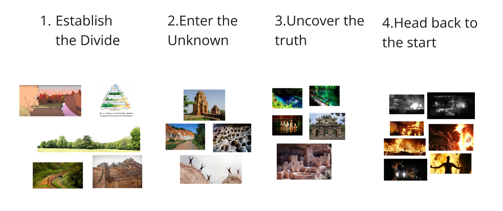

Recently I started writing Dialogue for the indie game I have been working on in my free time with a couple friends. So far in my blogs the game has been called Project Androidmada, but late last year we finally decided on its actual name. Tech Division.
It's really simple but it actually applies to the themes of our game and surprisingly is not really taken… So fingers crossed things stay that way.
Anyway, while I took a writing class in college, have written a couple scripts for YouTube short films, stop motions, and parts of our last game Circuit Breaker, it has been a while. This time around I got a proper script writing application called WriterSolo for free and I am already enjoying the process.
There are a couple scenes in our game that our designer Warren and I have talked about in great detail and many others that we still need to figure out. One of the story moments we knew we wanted was an opening cutscene to quickly establish the world, the situation, and the players overarching objective. So I took a crack at just that and for a first draft of a scene I gotta say I am pretty happy with what I wrote so far. Super original, no. A little convoluted, maybe. But despite that when I read it I feel like there actually is something there and I am looking forward to writing more.
We had a little story retreat at the beginning of May where we planned out basically all the missions for the game. Not something I am prepared to go into more detail on in this post, but here is a little peak.


Anyway at this story retreat we did a dev table read of the scene and each of us played different characters. It was the first time the rest of the team was reading the draft so I was a little nervous. It was worth it though because there was some good feedback and the rest of the team really got to see a better vibe of what Warren and I are going for. From that feedback I realized there is A LOT of work to do, but I can't give up. I need to write this script!